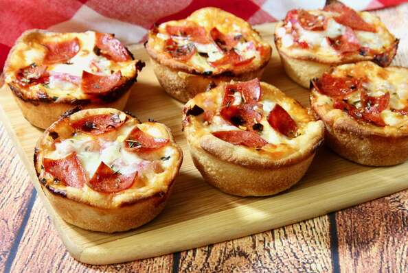

Pizza cupcakes

Cute pizza cupcakes
Ingredients
- cooking spray
- 8 medium cherry tomatoes
- 1 (11 ounce) can refrigerated pizza crust
- 1/2 teaspoons shredded mozzarella cheese
- 8 teaspoons finely chopped red onion
- 1/2 cup pizza sauce
- 8 slices pepperoni, quartered
- italian seasoning to taste
- red pepper flakes to taste
- garlic salt to taste
Steps
- Preheat the oven to 400 degrees F (200 degrees C). Spray 8 cups of a muffin tin with cooking spray.
- Finely chop cherry tomatoes and drain any liquid. Set aside
- Unroll pizza crust on a floured work surface and roll out thinly into a large rectangle. Using a 4-inch round cookie or biscuit cutter, cut 8 circles in the dough. Place dough circles in the prepared muffin cups, pressing dough into the bottom and up the sides of each cup.
- Drop 1 teaspoon mozzarella into each cup. Top with 1 tablespoon of pizza sauce. Add chopped tomatoes and red onions. Add 1 tablespoon of mozzarella to each cup, and top with pepperoni. Sprinkle each cup with Italian seasoning, red pepper flakes, and garlic salt to taste.
- Bake in the preheated oven until cheese is bubbling and melted, 14 to 15 minutes. Remove from the oven and let cool in the tin for about 5 minutes. Remove from the tin and serve hot.